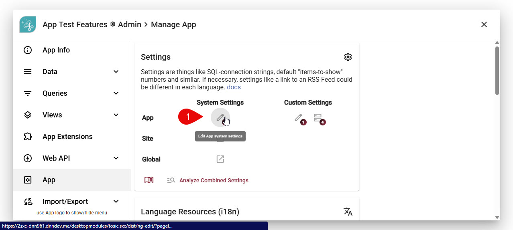
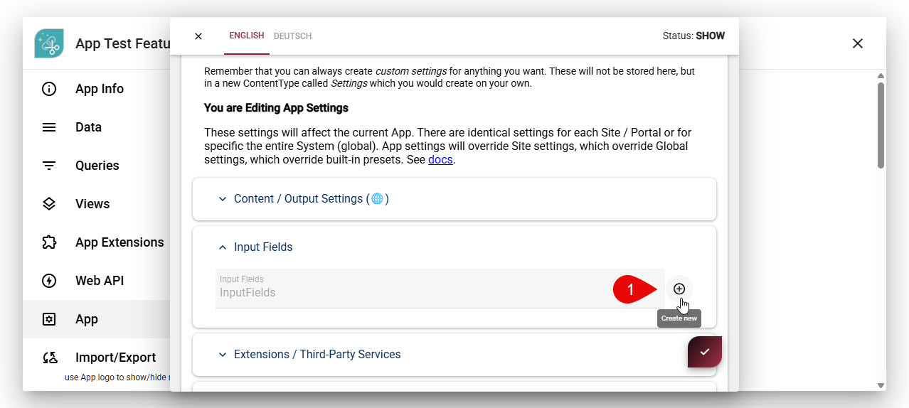
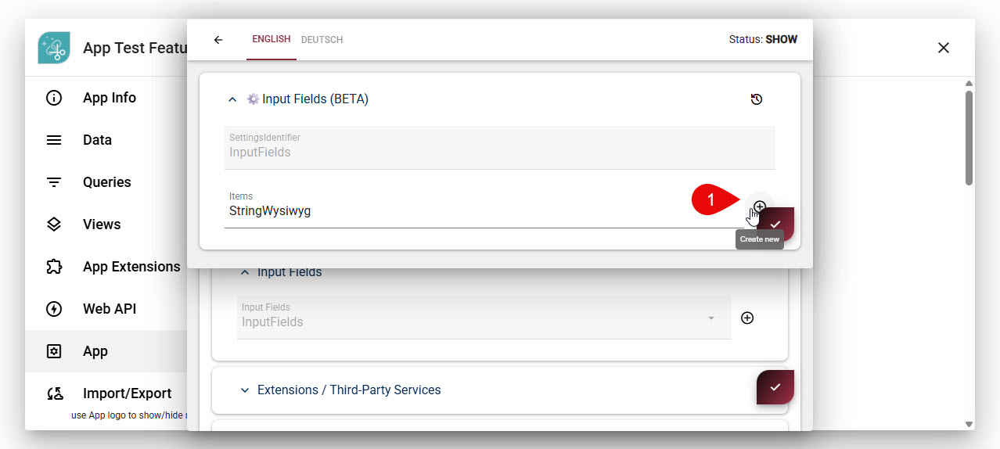
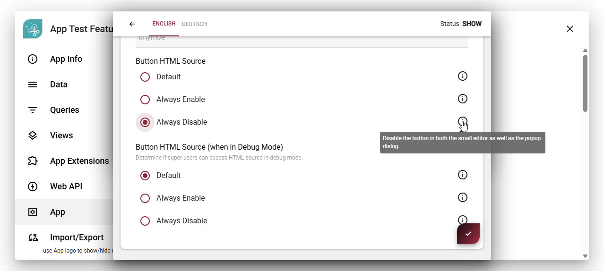

Field Input-Type string-wysiwyg
Use this field type for configuring simple text UI elements, storing string/text data. It's an extension of the basic string field type.
Features
- provide a wysiwyg text box
- rich WYSIWYG experience using TinyMCE
- ADAM support to drop images and documents
Modes (new v15.04)
The string-wysiwyg field type has these modes.
This is the standard mode, which is used if you don't specify a mode. It has various buttons to edit text and more.
Configure a String-Wysiwyg
The mode is configured in the normal field settings.
Special Configuration of the HTML Button
In the normal field settings, you can also configure whether the HTML button should be shown or not. This is useful if you want to allow users to add images and other media, but not allow them to edit the HTML directly.
The system defaults are as follows:
- The HTML button is shown for all users by default - but only in the full-screen dialog mode, not in the inline mode.
- The HTML button is hidden for all users by default in the inline mode.
You change the default behavior for all fields in the system by going to the System Settings (new in v21.04):
- "Button HTML Source" modifies the default - leaving it on
defaultwill keep the existing behavior. - "Button HTML Source (when in Debug mode)" setting - leaving it on
defaultwill allow super-users to see the HTML button in Debug mode, even if it's hidden for normal users.




Tip
You can specify this at the app-level, site-level or system-level, and the more specific setting will override the more general one.
History
- Introduced in EAV 1.0 2sxc 1.0, originally as part of the string field type
- Changed in 2sxc 6.0 - Moved to it's own sub-type
- Changed to be full-screen dialog editing only in 10.00
- Added option to switch between full-screen or directly in the form in 10.09
- Added options to enable / disable HTML and Advanced buttons in 10.09
- Added modes in 15.04, released in 16.00
- Added ability to hide HTML button for normal users, but show it for super-users in Debug mode in 21.04